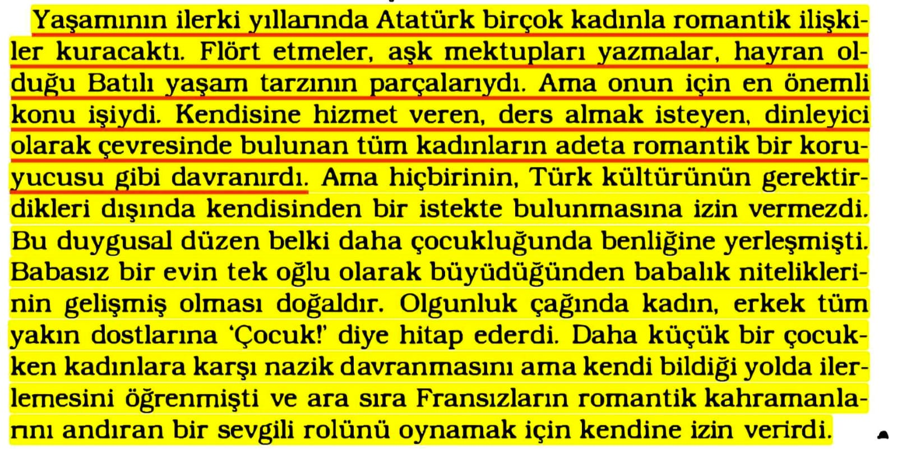
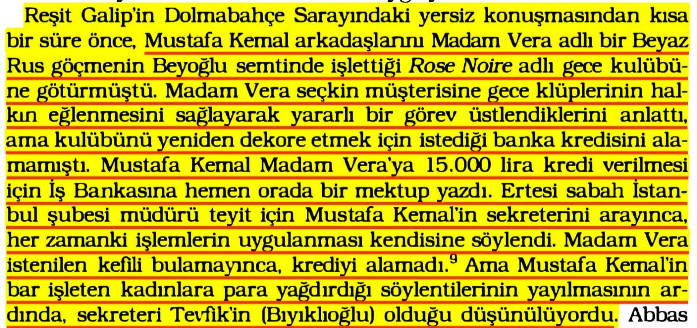
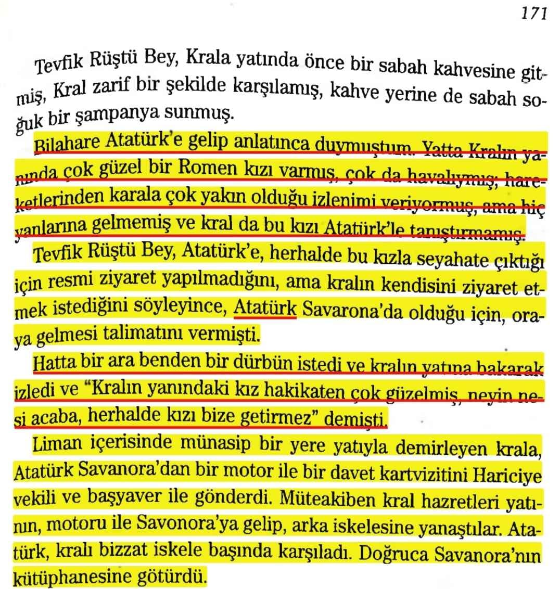
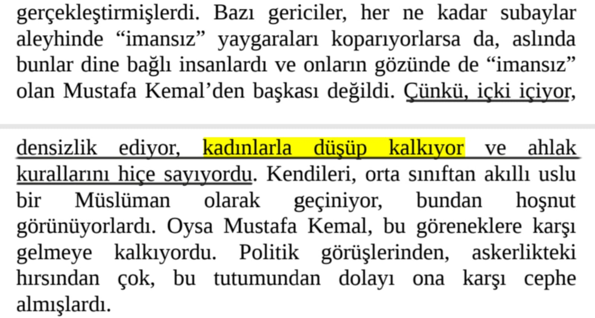
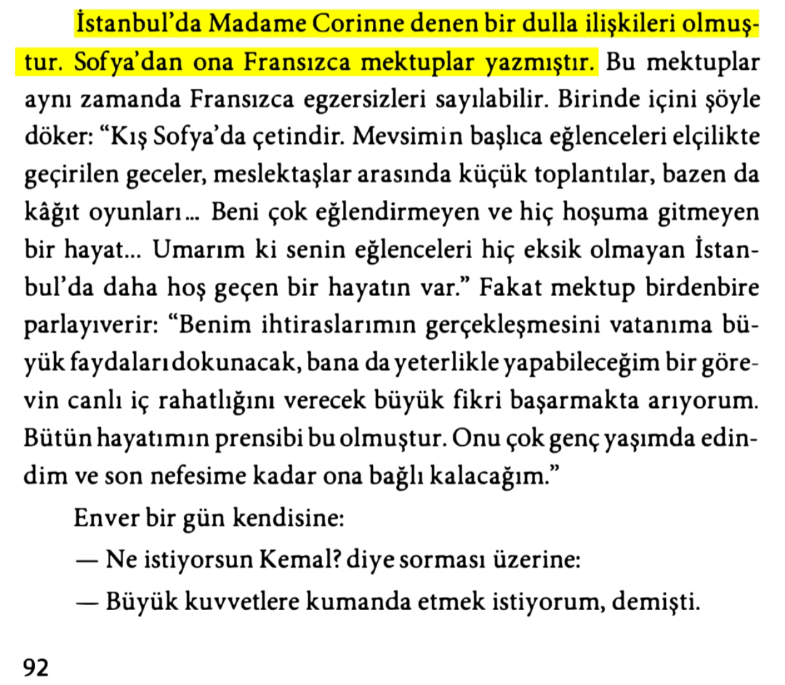
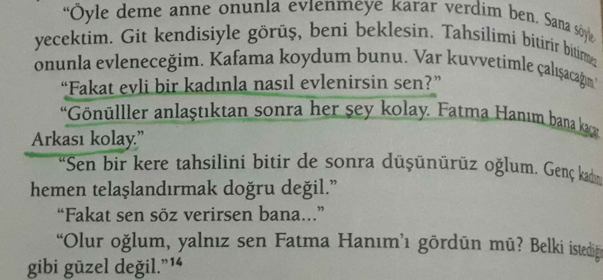
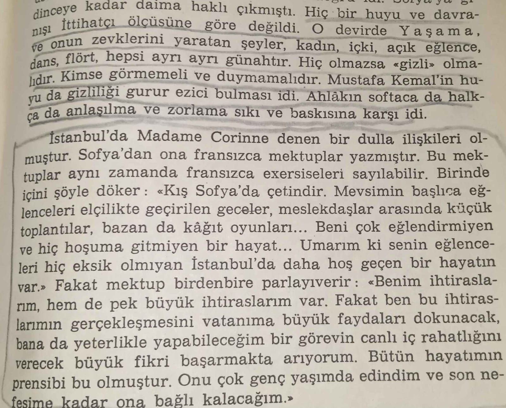

*📚 Andrew Mango, Atatürk, S.42*

*📚 Andrew Mango, Atatürk, S.456*

*📌 Nuri Ulusu'nun hatıralarına göre Atatürk, Romanyalı bir kızı dürbünle seyretmiş;📚 Nuri Ulusu, Atatürk'ün yanı başında, S.171*

📚 Lord Kinross, Atatürk Bir Milletin Yeniden Doğuşu, s,80-81

📚 Falih Rıfkı Atay, Çankaya, s.92

📌 *Evli bi kadınla evlenmek isteyen Mustafa Kemal.*📚 İpek Çalışlar, Atatürk, s.342

📌 *O devirde yaşama ve onun zevklerini yaratan şeyler...*📚 Falih Rıfkı Atay, Bateş yayınları-1968 Çankaya, s.79-80